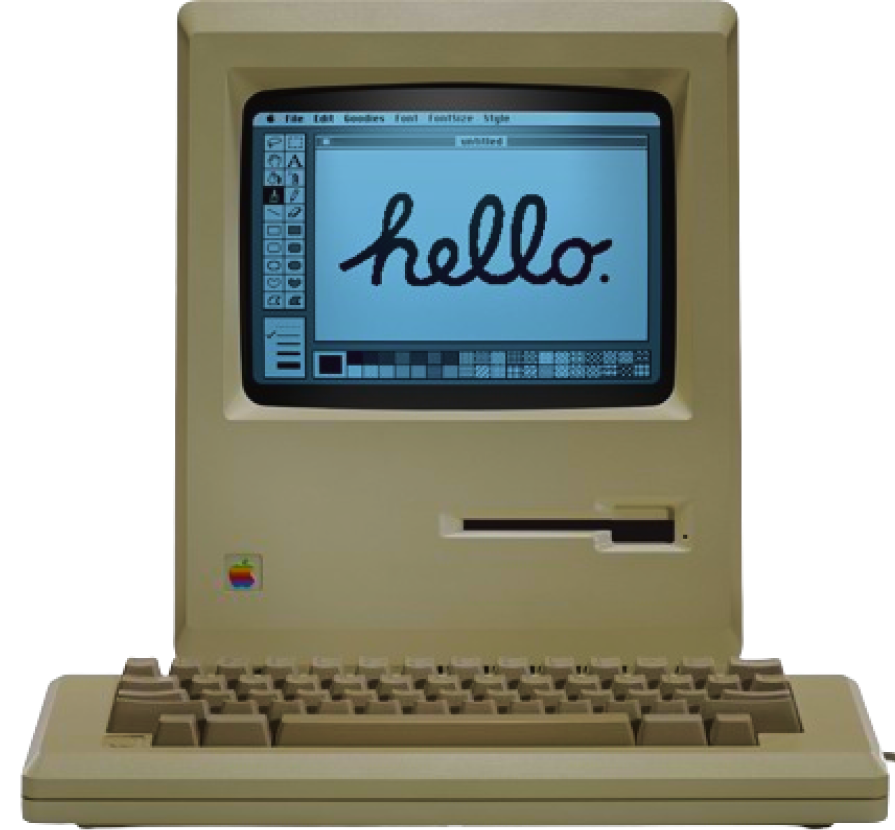

Geração 1950 até 1970
O IBM 610 Auto-Point Computer (Computador de Ponto Automático), lançado em 1957, foi um dos primeiros computadores pessoais, sendo utilizado por pessoas que só tinham experiência em utilizar calculadoras de escritório. Este computador possuía a capacidade de ajustar automaticamente o ponto decimal nas operações aritméticas com pontos flutuantes (float).
Considerado um "Terminal inteligente", o Datapoint tinha como objetivo ser um terminal versátil, eficiente e de baixo custo, utilizando uma fita magnética, ao invés de hardware como na maior parte dos computadores da época.
Os empreendedores do setor comercial ainda descobriram que o chamado "terminal programável" tinha capacidades que podiam executar todas as funções de um computador simples. Eles aproveitaram isso usando seus 2200 como um sistema de computação autônomo.
O Kenbak-1 é considerado pelo Computer History Museum como o primeiro computador pessoal do mundo mesmo havendo opiniões controversas. Não se tem muitas informações a seu respeito pois foram vendidas aproximadamente 40 unidades.
A programação do Kenbak-1 era feita diretamente em código de máquina, ajustando-se vários botões e chaves. Para manter o custo o mais baixo possível, a saída consistia numa série de oito lâmpadas que piscavam no painel frontal.
Geração 1970 até 1980
O Altair é reconhecido como a fagulha que levou à revolução do computador pessoal nos anos seguintes: os barramentos de computador desenhados para o Altair se tornariam um padrão de facto na forma de barramento S-100 e a primeira linguagem de programação para a máquina foi o Altair BASIC, que conduziu à fundação da Microsoft. Um simulador foi desenvolvido para ver como ele poderia ser utilizado, que pode ser visto clicando aqui.

O Sol-20 foi o primeiro microcomputador totalmente montado com teclado embutido e saída de televisão, o que mais tarde seria conhecido como computador pessoal.
O Sol apareceu na capa da edição de julho de 1976 da Popular Electronics como um "terminal inteligente de alta qualidade". Foi inicialmente oferecido em três versões; a placa-mãe Sol-PC em forma de kit, a Sol-10 sem slots de expansão e a Sol-20 com cinco slots.
O PET (Personal Electronic Transactor) foi um microcomputador/computador doméstico produzido pela Commodore a partir do final da década de 1970.
Não foi um computador que teve sucesso em vendas, entretanto foi o primeiro computador completo produzido pela Commodore e se constituiria na base para o futuro sucesso da empresa pelos computadores VIC-20 e 64.
O Apple II foi um modelo de computador pessoal fabricado pela empresa Apple Inc, equipado com interface para fitas cassetes de áudio e controlador de vídeo com NTSC e um modulador RF para televisão.
Macintosh 128K é um computador produzido pela Apple Inc. Vinha com 128 kB de memória e rodava o System 1. Tinha tela preta e branca e mouse com um só botão. Ele recebeu uma atualização, "System 1.1" , antes de ser sucedido pelo System 2.
O Macintosh é um grande marco na história dos computadores pois ele destacou-se como o primeiro a popularizar a interface gráfica, tela incorporada e mouse.

Macintosh Portable foi o primeiro microcomputador portátil da Apple lançado em 1989 tendo como CPU o processador de 16 MHz, custava cerca de U$7.000.
O Risc PC 600 originalmente vinha equipado com um ARM 610, uma CPU RISC de 32 bits com 4 KB de cache e clock de 30 MHz. Em dois anos, a tecnologia avançou consideravelmente, permitindo a instalação de um DEC StrongARM a 233 MHz, o que representava cerca de 8 vezes mais velocidade.
Essas máquinas operavam com o sistema operacional RISC OS, conhecido por seu design multitarefa cooperativo em janelas. Um aspecto notável era que o sistema operacional era armazenado em ROM, resultando em tempos de inicialização relativamente rápidos para a época.
O IBM ThinkPad 701, apelidado de Butterfly devido ao seu teclado deslizante, foi um subportátil lançado pela IBM em março de 1995 e comercializado até o final daquele ano. Este laptop, que custava entre US$ 1.499 e US$ 3.299, destacou-se como o mais vendido em 1995 e ganhou 27 prêmios de design.
Apesar de seu sucesso, o 701 foi descontinuado devido à evolução dos designs de teclado, que perderam sua singularidade com o aumento do tamanho das telas. Após sua retirada do mercado, houve especulações sobre o desenvolvimento de um novo notebook com um teclado semelhante ao estilo borboleta do 701.
O Power Macintosh G3, comumente chamado de beige G3s ou platinum G3s, foi uma série de computadores pessoais lançados pela Apple Inc. de novembro de 1997 a janeiro de 1999. Foi o primeiro Macintosh a usar o PowerPC G3 (PPC750).
O Power Mac G5 foi uma série de computadores pessoais fabricados pela Apple de 2003 a 2006 como parte da linha Power Mac. Destacou-se como o desktop mais poderoso da Apple quando lançado, sendo promovido como o primeiro desktop de 64 bits do mundo. O G5 foi notável por ser o primeiro desktop da Apple a apresentar um gabinete de liga de alumínio anodizado e a CPU PowerPC 970. Três gerações foram lançadas antes de ser descontinuado durante a transição para os processadores Intel, sendo sucedido pelo Mac Pro, que manteve parte do design do gabinete do G5 por muitos anos, tornando-o um dos mais duradouros da Apple.
Desde os anos 2000, os computadores passaram por uma evolução notável. Os processadores tornaram-se mais poderosos e eficientes, com a transição dos 32 bits para os 64 bits e o surgimento de CPUs multi-core. A capacidade e velocidade da memória RAM e do armazenamento (HDDs e SSDs) aumentaram significativamente, permitindo melhor desempenho e armazenamento de dados mais rápido. Houve uma revolução na conectividade, com a popularização de Wi-Fi, USB, Bluetooth e outros padrões de comunicação sem fio.
O design dos computadores também mudou, com a introdução de laptops ultraportáteis, tablets e dispositivos 2 em 1. Além disso, houve um foco crescente em eficiência energética e sustentabilidade. Ao longo das últimas décadas, os computadores se tornaram mais integrados às nossas vidas diárias, impulsionando avanços em áreas como inteligência artificial, realidade virtual, aprendizado de máquina e muito mais.